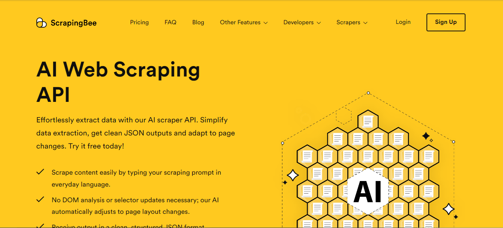

AI-powered web scrapers represent a paradigm shift in data extraction, combining machine learning, natural language processing (NLP), and computer vision to automate and optimize web scraping tasks. Unlike traditional scrapers reliant on static rules, AI-driven solutions dynamically adapt to website layouts, JavaScript-rendered content, and CAPTCHAs while evading detection through behavioral mimicry. Techniques like DOM tree analysis, transfer learning for site-specific parsing, and proxy rotation powered by reinforcement learning enable these tools to handle large-scale, heterogeneous web data with unprecedented precision.
1. Bright Data

Brightdata is among the best companies offering AI-powered web scrapers to relieve you from too much pressure of data collection. Using Bright Data’s technologies, you get access to dedicated endpoints for a smooth extraction of structured web data from 120 popular domains.
Through BrightData’s solution, you can opt to scrape using an API or a code scraper. What’s more is that you only need to pay for successfully delivered results, and get the data in your preferred & chosen format. With the web scraper API, you can easily use the interface to build your API request, build your scheduler to control data delivery frequency, and easily deliver & download data to your preferred storage. On the other hand, for the no-code scraper, the interaction is within the control panel; therefore, easily control the scraper and download your data results through the control panel.
You are also assured of custom headers, Captcha solver, user agent rotation, automatic IP rotation, JavaScript rendering, and much more. Also, you can get the structured data in JSON, NDJSON, or CSV file format through Webhook or API delivery. Through Brightdata, you also gain access to over 150Million real user IPs in over 195 countries. You can also opt to use the customized APIs for business, finance, social media, real estate, etc.
Features
Pricing
2. BrowseAI

BrowseAI is another exceptional website that features a no-code interface for creating scraping robots that can identify content types and webpage structure changes. Apart from that, it also supports API and Webhook automation. It is so easy to train the AI robots to extract structured data from the website of your choice and integrate seamlessly with other tools.
What makes it even more exciting to use BrowseAI is that you don’t even need any technical experience. The AI-powered web scraper can easily extract the same set of data from thousands of pages and turn web data into structured datasets that you can easily analyse, export, or integrate.
Even if the AI web scraper notices website changes, you can also set up monitors to get notified of element changes. Also, you can easily capture visual data that text extraction can’t provide. Ideally, you can utilize the data collected for training LLM, ML, or AI. Also, you have no limitation since you will gather data that will help you in competitor analysis, market intelligence, etc.
It also supports advanced technical features like automatic retries, intelligent rate limit, proxy management, and error recovery to ensure smooth data extraction. You can also easily tailor your extraction with various parameters like search terms, date ranges, or locations.
Features
Pricing
3. Crawl4AI

Crawl4AI is ideal for web data extraction from forums and blogs. It uses an LLM (Large Language Model) to parse web pages dynamically, which ultimately reduces the maintenance cost. Crawl4AI is a GitHub repository, therefore, open source.
It is a great AI-powered crawling tool for data extraction. While using it, you are assured of outstanding speed and accuracy. You will be able to extract data so easily from different niche ad industries for personalized uses.
It is also LLM-friendly, with well-structured text, images, and metadata so AI models can easily consume the content. Its documentation provides a great user guide on how to get started.
Features
Pricing
4. FireCrawl

Firecrawl is another efficient platform that offers AI-powered web scrapers that support deep crawling of websites and outputs in markdown for seamless LLM integrations. It also works very well with LangC. Through the AI-powered web scraper, you can easily crawl all the pages on a website and get the data you need in real time.
Also, you can easily search the web and get the content you need from any industry. Firecrawl is already integrated with the greatest existing tools and workflows to ensure you can perform tasks easily. The Firecrawl AI-powered web scrapers wait for content to load, thereby making scraping faster.
Additionally, you can easily take various actions, like scrolling till you find the content you want to collect. Also, FireCrawl is designed to scale with your needs; therefore, you can personalize based on the needs at the moment and the industry you are crawling.
Features
Pricing
5. Nimbleway
Nimbleway is among the best-ranked proxy providers with an AI-powered web scraping tool. Through the tool, you can easily collect any data of your choice seamlessly without fear of IP blocks, geo restrictions, or Captchas. The Nimble AI browser has got you covered!
Additionally, it is easy to collect the web data with the simple REST API without needing any other infrastructure to carry out the scraping tasks. It takes control of the whole data collection process. You just need to send an API call with the URL of your choice to gather the data you need straight to your cloud storage. Easily get data for various needs like e-commerce, SERP, social media, travel, etc.
Features
Pricing
6. Zyte
Zyte also features an AI-powered web scraper that will make it easy for you to scrape the data you need effortlessly. Also, the AI-powered web scraper easily adapts to website changes to ensure a seamless experience for you.
Through Zyte, you can easily automate actions like clicking, typing, and scrolling. Get a wide variety of content ranging from sentiments, comparisons, and summaries. Also, through the Zyte AI-powered web scraper, you only get to scrape what's on the page, therefore, more accuracy.
Furthermore, through the generative mode, you can create data points based on page content. Automatic extraction can be performed using a browser request or an HTTP request.
Features
Pricing
7. ScrapingBee
ScrapingBee is another reliable platform that offers an AI web scraping API. Therefore, you won’t need to do it manually; the AI-powered web scraper will do the task for you. Also, by the data extraction, you are assured of getting clean JSON outputs with the scraper easily adapting to page changes. It is easy to scrape e-commerce data, extract emails & contact info, summarize, and aggregate news content.
Also, in combination with premium proxies and cutting-edge headless browsers, it will be easy to bypass anti-bot technology. By making an API request, you will get the data you need instantly. Moreover, it features a screenshot feature that allows you to get a screenshot of the website and not just HTML. Even if you have no coding skills, you don’t have to worry.
Features
Pricing
8. Thunderbit

Thunderbit offers a reliable AI-powered web scraper that makes data collection easy for all users. With over 30,000 users, it is a platform you can trust. You can extract data from emails, phone numbers, product details, YouTube tags, YouTube Transcriptions, AI sales email generator, AI email headline generator, Amazon review exporter, TikTok hashtag generator, Amazon products, Instagram hashtag generator, YouTube tags, etc.
The AI-powered web scraper easily identifies important data and creates column names for your use case. Therefore, it filters out unimportant information, so that you can only focus on the important data. It easily recognizes key information within files and extracts it with precision. Thunderbit’s interface doesn’t require any coding knowledge; you just need to define the column names for AI to understand what you are scraping.
Features
Pricing
Conclusion
As the web evolves toward dynamic, anti-bot architectures, AI-powered scrapers are becoming indispensable for enterprises requiring structured data from unstructured sources. By integrating transformer models for semantic understanding, clustering algorithms for template detection, and adversarial training to bypass WAFs, these systems push the boundaries of automated data collection. However, their deployment necessitates ethical considerations around rate limiting, robots.txt compliance, and legal frameworks—balancing technical innovation with responsible scraping practices.